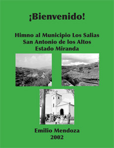

¡Bienvenido!
Himno
al Municipio Los Salias,
San Antonio de los Altos, Estado Miranda
Emilio
Mendoza

Voces, acompañamiento
armónico, bajo
2002 / 5 min. 30 sec.
Fotos de la partitura: Sarita (Sara Guardia de Mendoza), 1956,
después de su llegada con su esposo Benjamín a este hermoso
pueblo.
Partitura en PDF ArteMus, San
Antonio, 2002.
Distinciones
- Esta pieza concursó para el Himno del Municipio Los
Salias, San Antonio de los Altos, donde el autor vive. Obtuvo
el Tercer Lugar. Se entregó la partitura con arreglo armónico
en cifrado, luego me dí cuenta de que el jurado no tenía idea
de lectura de cifrado armónico...
- Se está gestionando la posibilidad de que se escuche a
través de las campanas electrónicas de la iglesia de San
Antonio de los Altos, aún sin éxito.
Texto
¡Bienvenido!
Himno al Municipio Los Salias,
San Antonio de los Altos, Estado Miranda
Coro:
Bienvenido mi_amigo_a Los Salias,
a la fresca montaña de paz,
un lugar y sentir con la vida_en su calma,
confianza y seguridad.
¡Nos encanta vivir en Los Salias!
Estrofas:
1.
Guaicaipuro con Epoyma lucharon al morir,
bajo_espadas y las cruces de_invasión,
a Gulima defendieron contra_el vil conquistador,
quien esclavos a su pueblo convirtió.
2.
Los canarios que vinieron por obra del Marqués,
trabajaron por sus tierras en común,
y su_ejemplo, Comunero, no debemos olvidar,
en Los Salias siempre_habrá comunidad.
3.
En haciendas de café que_el Padre Sojo inició,
El espíritu de libertad nació,
Con los tres hermanos Salias Venezuela comenzó
Su proceso_independiente de nación.
4.
Es la tierra de poetas, artistas por doquier,
sus colinas guardan musas de verdad,
y los músicos prefieren la neblina y quietud
y_en parrandas navideñas celebrar.